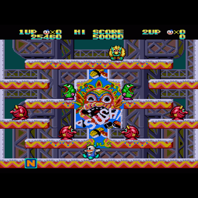

Detalles del Juego
Snow Cousins es un videojuego creado para la asignatura "Programación de Videojuegos en Lenguajes Interpretados" del Grado de Videojuegos
de la Universidad Complutense de Madrid. Este videojuego está basado en Snow Bros , juego de arcade lanzado en 1990 por Toaplan. Es un juego de
plataformas en el que debes eliminar a todos los enemigos de cada nivel. Esto se consigue lanzándoles nieve que es la capacidad especial de los
personajes convirtiéndoles así en bolas de nieve y luego lanzándolas a rodar.
